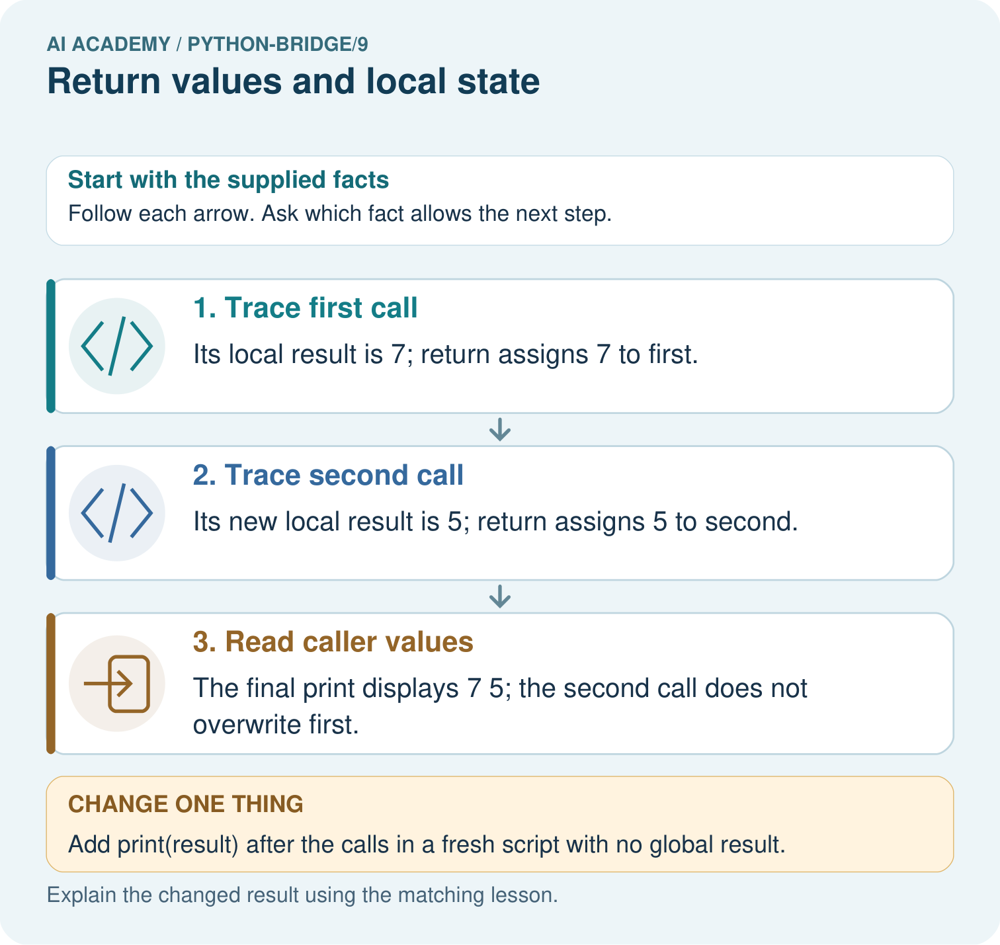

AI Academy · Python readiness bridge · Student lesson
Return values and local state
Learn to understand, design, build, test and explain AI systems responsibly.
Project: Python readiness portfolio
Before you start
A function show_remaining(capacity, used) prints capacity - used. What does calling it with (9, 4) display? Does defining it alone display that result?
Plan time to read, investigate and explain. Keep predictions separate from observations.
Student lesson · 1 of 14
Your mission
Your learning target
I can use a returned value in a later calculation.
I can trace local variables separately for each function call.
I can detect a missing return and test repeated calls.
Remember before reading
Close your notes first. A rough first answer helps us choose the right starting point; it is not a score for your ability.
Without opening the old lesson, explain one key idea from Functions and arguments. Give an example and a mistake that the idea helps you avoid.
Without opening the old lesson, explain one key idea from Loops and trace tables. Give an example and a mistake that the idea helps you avoid.
Without opening the old lesson, explain one key idea from Expressions and operator order. Give an example and a mistake that the idea helps you avoid.
After trying, check the relevant lesson or ask your teacher. Change the part of your explanation that the evidence shows was wrong.
This week you will practise:
Use a returned value in a later calculation
Trace local variables separately for each function call
Detect a missing return and test repeated calls
Retrieve what you already know
A function show_remaining(capacity, used) prints capacity - used. What does calling it with (9, 4) display? Does defining it alone display that result?
This week’s end goal
Trace return values and local state and explain the changed program before running it.
Student lesson · 2 of 14
Notice the evidence
Two fictional cupboards have spare spaces. We want to add their spare spaces without copying numbers from the screen. Last week a function printed each answer. This week a function returns its answer so the calling code can store it, combine it or choose to print it.
Assume nonnegative integer counts and used no greater than capacity. This calculation does not validate those assumptions. Work in a Python script so a call does not automatically display its return value as it might in an interactive console.
Student lesson · 3 of 14
See how it works
def remaining(capacity, used):
spaces = capacity - used
return spaces
first = remaining(12, 4)
second = remaining(10, 7)
print(first + second)Two calls return two values
return spaces ends the current function call and sends the value of spaces back. The assignment first = remaining(12, 4) waits for that value and stores 8. The next call stores 3 in second. Neither call prints. The final statement prints 11. A statement after an executed return in the same call is not reached.
Connect the picture and the explanation
Point to the input, the deciding step and the result in this week’s visual. Explain the same step in ordinary words. A picture helps when you can say what each part represents.
Student lesson · 4 of 14
Compare the cases
Compare a familiar case with a changed case
Using the correct definition, store a = remaining(8, 3), b = remaining(8, 8), c = remaining(8, 3). State a, b and c. In a fresh script, explain why print(spaces) outside the function fails.
Change one thing in the pictured case
Change: Add print(result) after the calls in a fresh script with no global result.
Prediction: NameError occurs because that local name is not defined in the caller.
Reason: A returned value and the function’s internal name are different things.
Student lesson · 5 of 14
Words that unlock the idea
| Word | Meaning |
|---|---|
| Return value | A value a function sends back to its caller |
| Caller | The code that calls a function |
| Local variable | A name assigned inside a function and used in that function call |
| Scope | The region of code in which a name can be looked up |
| None | A Python value representing no result value in this lesson |
Student lesson · 6 of 14
Follow a worked example
| Point in execution | Local spaces | Caller values |
|---|---|---|
| First call before return | 8 | first not assigned yet |
| Second call before return | 3 | first is still 8 |
| After both calls | Not accessible by this local name | first is 8 and second is 3 |
capacity, used and spaces belong to the current call. The second call gets new parameter values and calculates its own spaces; it does not overwrite first. In a fresh script with no outside variable called spaces, adding print(spaces) after the calls raises NameError. Use the returned value stored in first or second instead.
Learn from the worked case
Cover the result before checking it. Say what is given, choose the procedure, and follow one step at a time. Then uncover the result and explain your first mismatch. Ask why a step is allowed, not only what number it produces.
A pictorial worked case: Return values and local state
Return values survive their calls. A function returns a local calculation that the caller stores.
The facts we will use
Python 3: def extra(a,b): result=a+b; return result. Then first=extra(2,5); second=extra(4,1); print(first,second).

Read the picture one step at a time
Why this result follows
Returning passes a value back to the caller. Local names belong to a function call; storing the returned value creates a separate caller binding.
What this example does not establish
The example uses immutable integers; shared mutable objects require additional reasoning about references.
Student lesson · 7 of 14
Find and repair a mistake
def remaining(capacity, used):
spaces = capacity - used
print(spaces)
answer = remaining(12, 4)
print(answer)This faulty version displays 8 and then None. It reaches the end of its body without a return statement, so the call returns None. Printing 8 inside the function does not make 8 its return value. None is not zero. Trying answer + 1 raises TypeError in this example.
Replace print(spaces) inside the function with return spaces. Keep print(answer) in the caller. The repaired script prints 8 once, and the caller can calculate answer + 1. Test the stored value as well as what appears on screen.
Locate the earliest unsupported step
Use the faulty printing version with answer = remaining(11, 2). State the displayed number and the value stored in answer. Explain why print(answer + 1) fails, then repair the function and predict the repaired output.
Student lesson · 8 of 14
Practise together
Using the correct worked definition, execute result = remaining(15, 6), then doubled = result * 2. State both stored values and what the script displays before a print statement is added.
Practise with less help: Trace separate calls
Use workbook W2 for the connected example “Return values and local state”. First fill the input and rule boxes. Try the middle steps before asking for a hint. After a hint, try the next step yourself.
| Plan | Do | Check |
|---|---|---|
| What is given? Which rule or procedure applies? | Record each intermediate step. | Does the result follow? What remains unknown? |
Explain your trace to a partner. Your partner points to one step to check. Swap roles on the next case. Each person writes their own explanation.
Check your reasoning
Use the worked case for Return values and local state. Proposed explanation: “Printing a value returns that value”. Decide whether this explanation is supported. Point to the step or supplied fact that decides; explain your repair if needed.
Answer on your own before discussion. If you are unsure, say which step you need help with.
Explain the picture
Trace the two returned values and explain why first stays seven. What happens if the caller tries to print result directly?
This is supported practice. Keep the separately named independent case for an attempt before feedback.
Student lesson · 9 of 14
Run the investigation
Predict, investigate and preserve the evidence
Using the correct definition, store a = remaining(8, 3), b = remaining(8, 8), c = remaining(8, 3). State a, b and c. In a fresh script, explain why print(spaces) outside the function fails.
def remaining(capacity, used):
spaces = capacity - used
return spaces
first = remaining(12, 4)
second = remaining(10, 7)
print(first + second)def remaining(capacity, used):
spaces = capacity - used
print(spaces)
answer = remaining(12, 4)
print(answer)| Record | Your evidence |
|---|---|
| Given input and fixed rule | |
| Prediction before checking | |
| Actual result, or “not run” | |
| First mismatch and one explanation | |
| Boundary or missing input and expected response |
On paper, trace the supplied procedure. If code is provided, predict before running it in a local practice file. Never write an expected answer as though it were an observed run.
Plan → try → check
Before trying: what do I expect, and why? While trying: which step could first go wrong? Afterwards: what did I actually observe, and what should change? Keep “not run” if you only traced the procedure.
Student lesson · 10 of 14
Build your understanding
Explain → apply → challenge
Using the correct worked definition, execute result = remaining(15, 6), then doubled = result * 2. State both stored values and what the script displays before a print statement is added.
Use the faulty printing version with answer = remaining(11, 2). State the displayed number and the value stored in answer. Explain why print(answer + 1) fails, then repair the function and predict the repaired output.
A function body has spaces = capacity - used, then return spaces, then print("done"), all at the same indentation. What does answer = remaining(4, 4) store and display? Explain whether the final print can run.
Student lesson · 11 of 14
Connect your project
Add a labelled return values and local state evidence sheet to Python readiness portfolio. Show how you can use a returned value in a later calculation. Use the supplied fictional case and keep its inputs, intermediate steps, calculation or prediction, and limitation. Connect this record to last week’s record; a matching answer without a trace is insufficient.
| Project evidence | Record |
|---|---|
| Component and version | |
| Inputs permitted at prediction time | |
| Trace and comparison with earlier work | |
| Failure, limit and human review |
Evidence for your project
For Python readiness before the Responsible Plant Classifier, retain a trace of the values, the predicted outputs and the changed-case explanation. Use actual Python 3 results to check the prediction after reasoning first.
Student lesson · 12 of 14
Show what you know
For a function that only calculates from these integer arguments, repeat the first call after a different call. remaining(12, 4), remaining(10, 7), remaining(12, 4) should return 8, 3, 8. Store each result and compare it with a prediction. These examples create fresh local variables each time; do not assume every possible function is independent of earlier calls.
A function body has spaces = capacity - used, then return spaces, then print("done"), all at the same indentation. What does answer = remaining(4, 4) store and display? Explain whether the final print can run.
Student lesson · 13 of 14
Study a complete case
Complete evidence record
Two calls return two values
Follow the input through the stated procedure to its result. Cover the result first, predict it, then explain every intermediate step. The text/table accompanies the figure so the example can be read without colour.
Student lesson · 14 of 14
Try a new case independently
Independent case: Use returns and keep local state local
Trace both calls and the final expression. If return total is removed from the function, does this final print complete? Would a separate print(total) outside the function have access to its local variable?
def twice(n):
total = 2 * n
return total
first = twice(3)
second = twice(5)
print(first, second, first + second)
Attempt this case before feedback. Record any help. Earlier examples below are further practice; a case already practised with feedback cannot establish fresh transfer.
Attempt this without hints
Each tray holds 5 counters. Define stock(trays, loose) to return the total using a local variable total. Assume nonnegative integer arguments. Store results for (2, 3), (0, 3) and (2, 0). Print the sum of the first two stored results. Predict that output and all three stored values. Call (2, 3) again to check fresh state.
Record support used: none, hint or teacher explanation. After feedback, a different case is needed to demonstrate independence.
Use feedback to improve
Attempt the independent case before hints. Record whether you worked alone, used a hint or followed a model. After feedback, fix the first unsupported step and explain why it changed. A later check uses a changed case, not a copied answer.